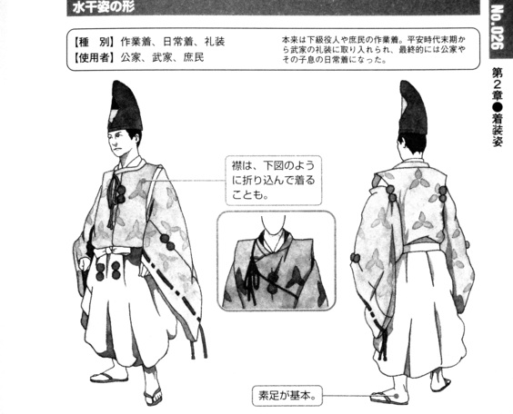

ni'o ni'o ni'o
lo nenri be lo spati denmi
fi'e la .akutagaun.riunosuk.
sei la .guskant. fanva
ni'o ni'o
lisri fi lo poi lo pulji cu te preti fo ke'a ku'o tricu katna se jibri
ni'o
la'e po do di'u jetnu
.i
lo pu co'a sanji be lo de'u morsi xadni cu me mi je'u
.i
mi ta'e ca ji'a lo zi cerni te zu'e lo nu katna lebna lo trixe cmana ckunrsugi to'i sa'a lo ckunrsugi cu du la'o ly Cryptomeria japonica ly toi [ckunrsugi] cu klama pu ki
.i ce'o .ua
ne'i lo cmana ctino spati bo denmi lo de'u morsi xadni cu zvati
.i
pau pei zvati ma kau
.i
la'a ri lo la .iamacinan. dargu va lo li sa'e nai vo bi'i mu gutcrtco to'i sa'a pa gutcrtco cu mitre li ji'i pa no so toi [gutcrtco] cu darno
.i
sei ne'i loi spatrtake to'i sa'a lo spatrtake cu du la'o ly Arundinarieae ly noi tricu me la'o ly Bambusoideae ly gi'e xabju lo glare milxe foldi
sei tu'a la'o ly Arundinarieae ly bu'u la'o zoi Non-monophyly of the woody bamboos (Bambuseae; Poaceae): a multi-gene region phylogenetic analysis of Bambusoideae s.s.
Sarawood Sungkaew, Chris M. A. Stapleton, Nicolas Salamin and Trevor R. Hodkinson
Journal of Plant Research, 2009, Volume 122, Number 1, Pages 95-108 zoi se cusku toi
[spatrtake] loi cinla ckunrsugi fe'e ru'i nai zvati se'u
stuzi lo nu tu'a no prenu cu se ganse
ni'o
lo morsi xadni
joi gi lo blanrxanada to'i sa'a lo blanrxanada cu skari tai lo'e xrula be la'o ly Commelina communis ly

.i sitna la'o py 太田 耕嗣 『源氏物語 千年の色: 単色』, 太田工芸, 京都, 2005 py toi [blanrxanada] crekrsuikanu to'i sa'a lo crekrsuikanu cu creka se ku'u lo gugdejupu be ca lo no'u la .xeian. cedra be co'i li ze so vo bi'o pa pa so re

.i sitna la'o py 池上 良太 『図解 日本の装束』, 新紀元社, 東京, 2008 py toi [crekrsuikanu] .e lo tcadu bo morna je cinje mapkrxeboci to'i sa'a lo mapkrxeboci cu mapku pi'o lo'e nanmu se ku'u lo gugdejupu be ca lo no'u la .xeian. cedra be co'i li ze so vo bi'o pa pa so re
.i sitna la'o py 池上 良太 『図解 日本の装束』, 新紀元社, 東京, 2008 py toi [mapkrxeboci] ca'o dasni
gi gapru be fa lo betfu be'o vreta
.i ru'a
sei ku'i pa po'o mei dakfu
lo cutne midju cu se tunta je se xrani
.i se ri'a bo
loi pe ru'u lo morsi xadni ku spatrtake farlu bo pezli cu nuknrsuxo to'i sa'a lo nuknrsuxo cu skari tai lo'e cinta be fi la'o ly Caesalpinioideae ly bei va'o lo jikca

.i sitna la'o py 太田 耕嗣 『源氏物語 千年の色: 単色』, 太田工芸, 京都, 2005 py toi [nuknrsuxo] cinta jinru pe'a
.i
na'i lo ciblu ba'o rinci
.i
lo xrani moklu pe'a ji'a ca'a sudga za'a
.i ji'a ba'a nai
bu'u ri lo xirma sfani to'i sa'a lo xirma sfani cu sfani la'o ly Oestridae ly toi [xirma sfani] noi pa mei gi'e pe'a na tirna lo mi cadzu sance ji'a ku'o
tai'i to'i sa'a zo tai'i po'e la'o gy COI2 gy cipra cmavo gi'e tcita lo cmevla ja se sitna be se pi'o zo zoi ja ve skicu le du'u sinxa le du'u ma kau sance pe'a lo tcini ja fasnu toi [tai'i] .betar. ca'o snipa je batci
{kind=link}
ni'o
pau pei xu kau lo barda dakfu .a lo simsa na se viska
.i
na'i no da zvati
.i ku'i
bu'u lo pe ne'a ta ckunrsugi genja jibni lo skori cu pa mei je vreta
.i ji'a
sei sa'a ze'i smaji se'u
ba'a nai bu'o lo na'e skori no'u ji'a lo komcu cu pa mei je zvati
.i
loi zvati be ne'a lo morsi xadni cu po'o me ri .e ra vu'o noi re mei
.i ku'i
loi srasu .a loi spatrtake farlu bo pezli fe'e ru'i vi'a se stapa je se daspo ba'o
.i se ki'u bo ju'o
le nanmu pu'o lo mu'e se catra cu mutce carmi tolcando
.i
ki'a pau pei xu kau lo xirma na zvati
.i
ta je'u lo'e xirma na'e ka'e se nenri
.i ri'a bo ru'a
fe ta fi lo xirma klama dargu fa lo spati denmi pa mei cu bitmu